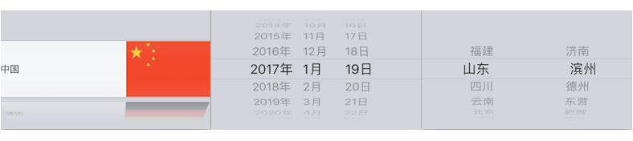
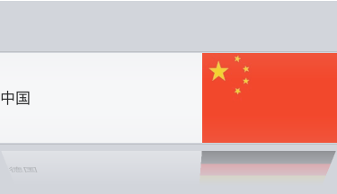
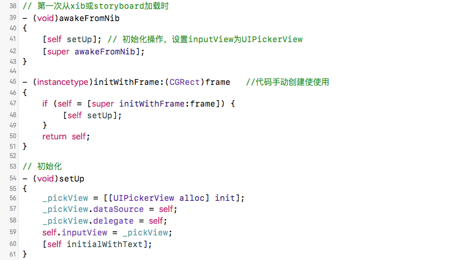
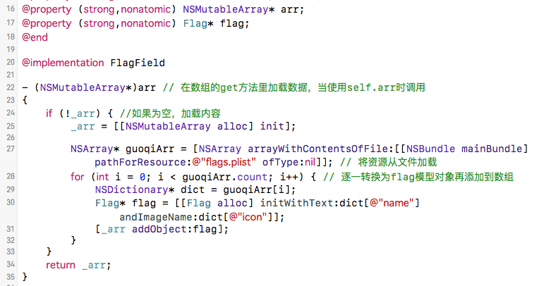
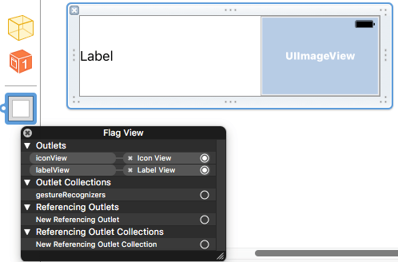
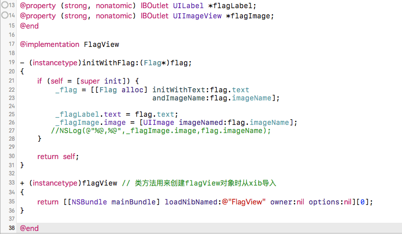
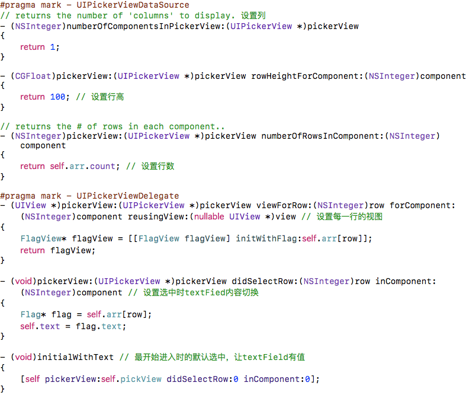

2016/11/08
Author: guoqzuo
iOS 自定义UITextField类(国旗、生日、城市键盘)
前面介绍了PickerView的简单用法，这里用PickerView和DatePicker来自定义UITextField类，让输入框的inputView不再是键盘，而是选择器。接下来会介绍三种基于选择器的封装键盘类: 国旗键盘、日期键盘、城市键盘。

封装国旗键盘
为什么要封装? 如果不封装为一个类，从storyboard将UITextField拖拽到对应的ViewController进行相关设置。代码会很混乱，且可移植性差。如果封装为一个UITextField类以后，只要设置UITextField的类为该封装类就可以调用国旗键盘，非常方便。这里我们创建一个UITextfield的子类FlagField，用来封装国旗键盘。默认的UITextField只要获取焦点就弹出一个键盘，可以用self.inputView方法指定弹出的view，只要是UIView都行。这里我们会将它的inputView设置为PickerView，国旗键盘只有一列，每一行都是label+ImageView，用xib来表示。效果如下:

在什么时候修改inputView
也就是将默认弹出的键盘修改为UIpickView，当UITextField从storyboard或xib加载时，会调用- (void)awakeFromNib方法，重写该方法初始化

实现<UIPickerViewDataSource, UIPickerViewDelegate>相关方法
- 准备数据(从资源文件导入，里面存放了国家，与对应的国旗)，将资源文件加载到数组，建立相关模型，这里没有用kvc将字典直接转为对象，后面会使用。

- 设置每行的UIView, 自定义UIView类FlagView，创建时勾选创建xib。高度100，宽度375: 225+150，只是在4.7寸上模拟，没有加界面约束。


- 设置pickerView的数据源和代理，数据加载

- 扩展：KVC, dict -> model，上面的数据转模型的时候可以只用字典初始化数据。
- (NSArray*)flags
{
if (_flags == nil) {
_flags = [[NSMutableArray alloc] init];
// 1.拿到filePath
NSString* filePath = [[NSBundle mainBundle] pathForResource:@"flags.plist" ofType:nil];
// 2.根据filePath创建JSON数据
NSArray* dictArr = [NSArray arrayWithContentsOfFile:filePath];
// 3.dict -> model
for (NSDictionary* dict in dictArr) {
id obj = [Flag flagWithDict:dict];
[_flags addObject:obj];
}
}
return _flags;
}Flag.h
#import <Foundation/Foundation.h>
#import <UIKit/UIKit.h>
@interface Flag : NSObject
@property (nonatomic, strong) NSString* name;
@property (nonatomic, strong) UIImage* icon;
+ (instancetype)flagWithDict:(NSDictionary *)dict;
@endFlag.m
#import "Flag.h"
@implementation Flag
+ (instancetype)flagWithDict:(NSDictionary *)dict
{
Flag* flag = [[self alloc] init];
// kvc
//[flag setValuesForKeysWithDictionary:dict];
[dict enumerateKeysAndObjectsUsingBlock:^(id _Nonnull key, id _Nonnull obj, BOOL * _Nonnull stop) {
// kvc
[flag setValue:obj forKey:key];
}];
return flag;
}
// [flag setValue:@"agt.gif" forKey:@"icon"];
- (void)setIcon:(NSString *)icon
{
_icon = [UIImage imageNamed:[NSString stringWithFormat:@"guoqi/%@", icon]];
}
@end封装日期键盘
与上面相比，日期键盘就简单多了，不用考虑什么协议，代理数据源。稍微不同的地方
- (void)setUp
{
_datePicker = [[UIDatePicker alloc] init];
_datePicker.datePickerMode = UIDatePickerModeDate; // 模式显示
_datePicker.locale = [NSLocale localeWithLocaleIdentifier:@"zh"]; // 设置为中文
// 添加控制器，监听选泽
[_datePicker addTarget:self action:@selector(dateChange) forControlEvents:UIControlEventValueChanged];
self.inputView = _datePicker;
}
// UIDatePicker选中时调用
- (void)dateChange
{
//NSLog(@"%s", __func__);
NSLog(@"%@", _datePicker.date);
// 创建一个日期格式字符串对象
NSDateFormatter* fmt = [[NSDateFormatter alloc] init];
fmt.dateFormat = @"yyyy-MM-dd";
self.text = [fmt stringFromDate:_datePicker.date];
}
// 初始化文本
- (void)initialWithText
{
[self dateChange];
}封装城市键盘
这里有一个二级联动需要注意，其它差不多，要养成写注释的习惯，不然思维容易混乱。这里行列设置有点晕。
CityFeild.m
#import "CityField.h"
#import "City.h"
@interface CityField () <UIPickerViewDataSource, UIPickerViewDelegate>
@property (nonatomic, strong)UIPickerView* pickView;
@property (nonatomic, strong)NSMutableArray* citys;
@property (nonatomic, assign)NSInteger currentRow;
@property (nonatomic, assign)BOOL isInitial;
@end
@implementation CityField
- (void)awakeFromNib
{
[self setUp];
}
- (instancetype)initWithFrame:(CGRect)frame
{
if (self = [super initWithFrame:frame]) {
[self setUp];
}
return self;
}
- (NSMutableArray*)citys
{
if (_citys == nil) {
_citys = [[NSMutableArray alloc] init];
NSString* filePath = [[NSBundle mainBundle] pathForResource:@"provinces.plist" ofType:nil];
NSArray* dictArr = [NSArray arrayWithContentsOfFile:filePath];
for (id dict in dictArr) {
id obj = [City cityWithDict:dict];
[_citys addObject:obj];
}
}
return _citys;
}
- (void)setUp
{
self.pickView = [[UIPickerView alloc] init];
self.pickView.delegate = self;
self.pickView.dataSource = self;
//NSLog(@"%@", self.citys);
self.inputView = _pickView;
}
#pragma mark - UIPickerViewDataSource
- (NSInteger)numberOfComponentsInPickerView:(UIPickerView *)pickerView
{
return 2;
}
- (NSInteger)pickerView:(UIPickerView *)pickerView numberOfRowsInComponent:(NSInteger)component
{
if (component == 0) // 省份
return self.citys.count;
else {
City* tempCity = self.citys[_currentRow];
return tempCity.cities.count;
}
}
#pragma mark - UIPickerViewDelegate
- (NSString*)pickerView:(UIPickerView *)pickerView titleForRow:(NSInteger)row forComponent:(NSInteger)component
{
if (component == 0) { // 省会名称
City* tempCity = self.citys[row];
return tempCity.name;
} else { // 省会下的城市
City* c = self.citys[_currentRow];
return c.cities[row];
}
}
- (void)pickerView:(UIPickerView *)pickerView didSelectRow:(NSInteger)row inComponent:(NSInteger)component
{
if (component == 0) { // 滚动省份
_currentRow = row; // 记录省份
// 刷新第一列的城市
[pickerView reloadComponent:1]; // 刷新第一列,重新选择第1列第0行默认选中
[pickerView selectRow:0 inComponent:1 animated:YES];
}
City* c = self.citys[_currentRow];
// 获取第0列选中的省会
NSString* province = c.name;
// 获取第1列选中的城市
NSInteger row1 = [pickerView selectedRowInComponent:1];
NSString* city1 = c.cities[row1];
self.text = [NSString stringWithFormat:@"%@-%@", province, city1];
}
// 初始化文本
- (void)initialWithText
{
if (_isInitial == NO) {
[self pickerView:self.pickView didSelectRow:0 inComponent:0];
_isInitial = YES;
}
}
@endCity.h
#import <Foundation/Foundation.h>
#import <UIKit/UIKit.h>
@interface City : NSObject
@property (nonatomic, strong)NSString* name;
@property (nonatomic, strong)NSArray* cities;
+ (instancetype)cityWithDict:(NSDictionary*)dict;
@endCity.m
#import "City.h"
@implementation City
+ (instancetype)cityWithDict:(NSDictionary *)dict
{
City* city = [[self alloc] init];
//kvc
[city setValuesForKeysWithDictionary:dict];
return city;
}
@end综合(设置初始值，监听过滤输入)
ViewController.m
#import "ViewController.h"
#import "FlagFeild.h"
#import "BirthdayFeild.h"
#import "CityField.h"
@interface ViewController () <UITextFieldDelegate>
@property (weak, nonatomic) IBOutlet FlagFeild *flagFeild;
@property (weak, nonatomic) IBOutlet BirthdayFeild *birthdayFeild;
@property (weak, nonatomic) IBOutlet CityField *cityFeild;
@end
@implementation ViewController
- (void)viewDidLoad {
[super viewDidLoad];
_flagFeild.delegate = self;
_birthdayFeild.delegate = self;
_cityFeild.delegate = self;
// Do any additional setup after loading the view, typically from a nib.
}
- (void)didReceiveMemoryWarning {
[super didReceiveMemoryWarning];
// Dispose of any resources that can be recreated.
}
// 是否允许用户输入文字，拦截用户输入, 每次输入都会询问代理，是否允许更改文本框内容
- (BOOL)textField:(UITextField *)textField shouldChangeCharactersInRange:(NSRange)range replacementString:(NSString *)string
{
return NO;
}
@end